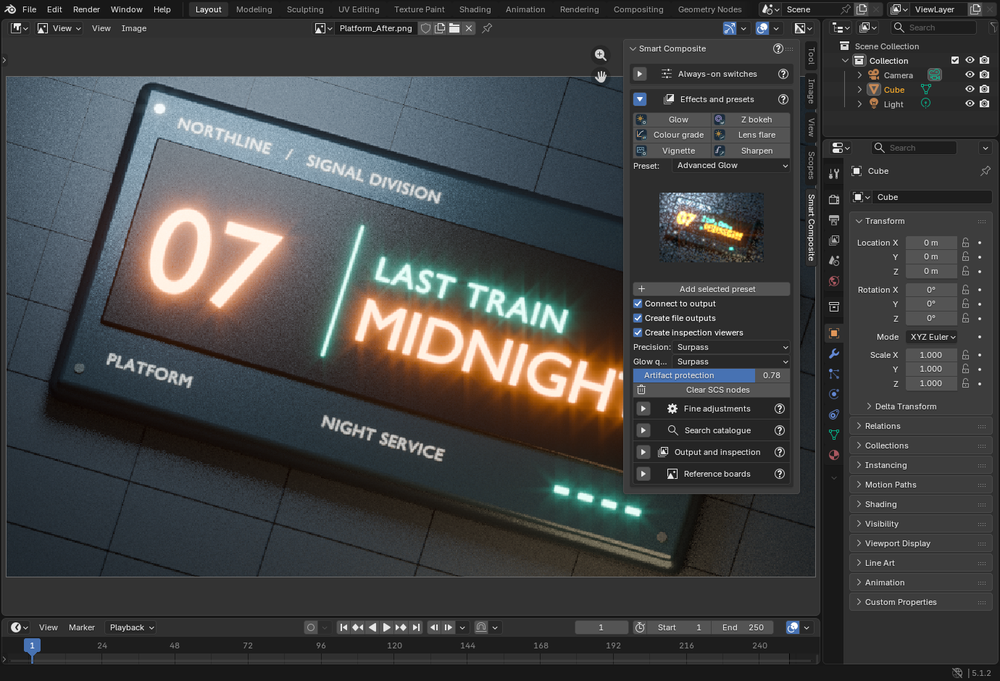
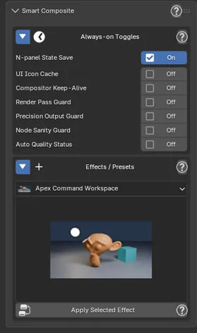

Version 1.0.0 / November 19, 2026 / For Blender 5.1.2
About this tool
SmartComposite Suite adds effects for the Compositor as "presets" (ready-made groups of nodes). The added nodes are standard Blender nodes, so after adding them you can adjust them freely like any other nodes. The "Smart Composite" tab in the Sidebar has two section headers. In "Always-on Toggles", you choose helper features that prepare things automatically, such as when a file is opened. In "Effects / Presets", you choose an effect and add it to the node editor. For how to install, how to switch to Japanese, how to open the N panel, and how to use the "?" help button, see the relevant chapter of the SmartTools Overall Specification.
In Object Mode, set the node editor to Compositor and press N over the node area. Select Smart Composite and expand Effects / Presets.
What to look for
The tab overview shows Effects / Presets below Always-on Toggles.
First hands-on task · Add Glow to a Rendered Image
Set up
Render a scene with a bright area, then add Glow in the Compositor. Check the node connections first, then render again and inspect the edge of that bright area.
Show the steps (6)
Render an image and open the Compositor.
Select the "Smart Composite" tab in the Sidebar.
Open "Effects / Presets".
Click "Glow".
Adjust the strength and other values in the nodes inside the "SCS Advanced Glow" Frame created to the right of your existing nodes.
Render again (F12) and check the result.
Check the result
Trace the added glow nodes to the output, then compare the bright edges after rendering again.
After changing the camera's focus distance, click "Z Bokeh" again. No extra bokeh is added; the existing bokeh readjusts to the current focus. Effects you added earlier also stay as they are.
SmartComposite — Give a night-platform sign a soft glow
Look at the amber “07” and the green service lights. This exercise spreads their light over the dark sign without changing its lettering. The sign, lights and lettering are included in the scene.
Recreate the finished image
Extract the download, open the start scene (Platform_Sign_Start.blend) and press F12 to render the first image.
In the main Blender window, change an area to the Image Editor and select Render Result. Place the pointer over the image, press N and open Effects and presets in the Smart Composite tab.
Press Glow once, then press F12 again. Look beside “07”: amber light extends beyond the lettering, while the plate remains dark.


Adjust the effect for your shot
Open the finished scene (Platform_Sign_Finished.blend) to inspect how the nodes are connected. Reduce the halo mix in the glow frame and render again. The halo around the letters should become fainter. To compare other effects, reopen the start scene and add one effect at a time.
Compatibility with existing scenes
Both examples were checked in Blender 5.1.2 on Windows. For an existing shot, open a copy and compare the same frame. Some independently rebuilt presets yield different images from older versions.
Which pass should I look at?
Keep a highlight, add haze behind a subject, or check a cutout. These three diagrams use the same spheres. Open an image at full size to inspect the edges.
The diffuse pass on the left is missing the small reflection of the light. Find it in the middle specular pass, then in the combined result on the right.
Add haze to the background
The colors on the left encode surface orientation. For distance, look at the depth pass in the middle. In the example on the right the distant sphere blends into the background while the nearer silhouette stays clear.
An add-on that adds node groups such as Glow and Bokeh to the Compositor (the node screen where you finish rendered images) with a single button.
Add six effects to the Compositor with a single button: Glow, Z-Depth Bokeh Blur, Color Grade, Lens Flare, Vignette, and Sharpen.
Press the buttons one after another and each effect is layered on the result of the previous one. For example, you can add "Vignette" on top of "Glow".
Choose from the "Preset to Add" list to add many more presets, such as "Edge Rays", "Heat Haze Distort", and "Height to Normal".
Added nodes are grouped in a Frame (a box that surrounds nodes) with a name starting with "SCS", placed to the right of your existing nodes.
Even in a scene that has no Compositor node tree yet, one is created automatically when you add a preset.
"Clean SCS Nodes" removes only the added nodes at once. Nodes you placed yourself are kept.
You can enable, one by one, helper features that automatically set up the Compositor, render passes (extra image data used for compositing), high-precision output settings, and basic nodes when a file is opened and at similar times.
N panel settings are saved automatically and can be restored the next time you start Blender.
When to Use It
To add a glow (light bleeding) to a rendered image, press the "Glow" button.
To add blur that follows depth, set the camera's Focus Distance and then press the "Z Bokeh" button.
To quickly lay out a full set of nodes for color adjustment, press the "Color" button.
To return to the original state after trying effects, press "Clean SCS Nodes".
To have the Compositor ready every time a template file shared with your team is opened, enable "Compositor Keep-Alive".
At a Glance
This is how the screen changes when you use this add-on. Chapter 5 walks through the exact steps in the "Example" boxes for each feature.
ExampleAdd Light Bleed (Glow) to a Rendered Image(demonstrated on a glowing Suzanne)
A single "Glow" button adds a group of nodes to the Compositor that makes light bleed out from bright areas. The effect appears in the result when you render again.
BeforeThe render before adding glow. The outline is crisp.
→
AfterThe result after clicking "Glow" and rendering again. Light bleeds around the bright areas.
Steps
Open the "Compositing" workspace at the top of the screen to show the Compositor.
Select the "Smart Composite" tab in the Sidebar (N key).
Open the "Effects / Presets" section header.
Click "Glow".
Render again (F12) and check the result.
What to look for: In the Before image, Suzanne's outline is crisp. In the After image, a round halo of light bleeds around the outline, and color also spills onto the edges of the shadow.
2. Key Features
This chapter walks through the features unique to this add-on, using numbered callouts on each figure. The numbers in a figure match the numbered list below it. Click a figure to enlarge it. Each individual setting is described under its own heading in Chapter 5.
2-1. Add an Effect with One ButtonTop Selling Point
To create glow or blur in the Compositor (the node screen where you finish rendered images), you normally place many nodes, connect them with lines, and adjust the values. With SmartComposite Suite, you just choose an effect and press a button: a ready-made group of nodes is put in a Frame with a name starting with "SCS" and added to the right of your existing nodes. The result that was connected to the output becomes the input of the new group, and the group's result connects to the output. Nodes you placed yourself are not moved, and when you want to stop, you can remove only what was added. The two images below show the render results before and after pressing "Glow" in the same scene.
Before pressing "Glow": the outlines are crispAfter pressing "Glow" and rendering again
2Preset to Add: Choose the effect to add from the list. At first it is "Apex Unified Workbench"
3Apply Selected Effect: Adds the effect chosen in ② to the node editor
4?: Lets you read what the currently selected effect does, before adding it
5Insertion X Offset: How far to the right of your existing nodes the new Frame is placed. At first it is 520 (160 to 2000). Existing nodes do not move
6Depth Near / Depth Far: The distance at which effects that use depth (such as "Depth Fog") start to take effect, and the distance at which they take full effect. At first they are 1 and 100. "Z Bokeh" does not use them when the scene has a camera
7Create File Output: When on, a File Output node is also created. When off, no EXR is written at every render
8Six Quick-Add Buttons: Glow, Z Bokeh, Color, Flare, Vignette, and Sharp. Pressing one adds it right away
9Clean SCS Nodes: Removes only the nodes this add-on added. Nodes you placed yourself stay, and the link to the output returns to the Render Layer
10SCS Advanced Glow: The added node group. You can change the values of the nodes inside just like normal nodes
11SCS Render Layer: An input node, added one per group
12Render Layer: The node that was there originally. Its position does not change
13Group Output: The group's result connects here and becomes the final image
How to Use
Open the Compositor, and in the "Smart Composite" tab of the Sidebar (N panel), open "Effects / Presets".
To use an effect right away, click a button such as "Glow" at ⑧.
For other effects, choose one at ②, read what it does with the "?" at ④, and then click ③ "Apply Selected Effect".
Render again (F12) and check the result.
Good to Know
Even in a scene that has no Compositor node tree yet, one is created automatically when you press the button.
If you add an effect that creates a File Output node, such as "Multi-pass File Output", EXR files are written at every render. Even at 640×360 a single file can be about 100MB, so turn off ⑦ if you do not need them.
To stop, click ⑨. If you press the wrong button, you can also undo with Ctrl+Z.
If you press another button next, the new effect is layered on the result of the previous one. The added Frames line up to the right, and the result of the previous Frame goes into the next one. The four images below show the results of pressing "Glow", "Vignette", and "Sharp" in that order from a state with nothing added, rendering again each time.
The node editor: three Frames line up to the right in the order pressed
1Glow: The effect pressed first
2Vignette: The second. Receives the result of ①
3Sharp: The third. Receives the result of ②
How to Use
Click the button of the first effect.
Then click the button of the effect you want to layer. The new Frame is placed to the right of the previous Frame.
Render again and check the layered result.
Good to Know
Effects are layered in the order you press them. To change the order, remove them with "Clean SCS Nodes" and press again.
If you press the same effect twice, it is layered twice (only "Z Bokeh" does not increase, and is readjusted to the current focus). If you make a mistake, undo with Ctrl+Z.
"Z Bokeh" blurs areas away from the camera's depth of field "Focus Distance". From the lens and Focus Distance at the time you press it, it calculates and sets an F-stop at which the blur is clearly visible. If you change the Focus Distance and press it again, it readjusts to the current focus without adding a Frame, and recalculates the F-stop. The two images below show the result after pressing it with the focus on the near object, and the result after setting the Focus Distance to 25m and pressing it again.
How to install the add-ons, how to change the interface language, and how the N panel and the "?" help buttons work in every add-on are covered in the "SmartTools Overall Specification". Please read chapters 2 to 5 there first.
ZIP to install
SmartCompositeSuite_1.0.0.zip
Name shown in Blender
Smart Composite
Supported Blender
5.1.2
4. Where to Find It
It is in the "Smart Composite" tab of the Sidebar (N panel). You mainly use it in the Compositor (Node Editor). When Smart Tools Manager is installed, which editors show the tab follows its settings. When it is not installed, the same tab also appears in the Sidebar of editors other than the Compositor.
Editors
Node Editor (Compositor)
Tab
Smart Composite
Mode
Object Mode
Open a Node Editor and set the editor type to "Compositor".
Place the mouse over the node editor and press the N key to show the Sidebar (see the SmartTools Overall Specification for details on opening it).
Select "Smart Composite" from the tabs along the right edge of the Sidebar.
Click the triangle of a section header (or its name) to open the section you want to use.
The "Smart Composite" tab in the Sidebar. The two section headers, "Always-on Toggles" and "Effects / Presets", are closed.
5. Features
Each heading is explained in order from the top of the panel. Click the "?" to the right of a heading to show the same explanation in Blender. The blue "Example" boxes show real operations on simple models such as Suzanne, with the 3D Viewport before and after.
5-1. Smart Composite (Whole Panel)
This is the entry point of the add-on. The two section headers, "Always-on Toggles" and "Effects / Presets", are lined up inside it as boxes. Both are closed at first.
LocationThe "Smart Composite" tab of the Sidebar
Item
What it does
Triangle Button
Opens and closes a section header. Clicking the name of the section header below the triangle does the same. Closing it does not change the settings inside or their on / off state.
? (Each Section Header)
Opens the "?" help button for that section header. For "Always-on Toggles" and "Effects / Presets", it is right next to the triangle. For the top "Smart Composite", it is at the right edge. The explanation is divided into three parts: "Overview", "Usage", and "Settings".
Click the triangle on the left of a section header to open it.
If you are unsure, click the "?" on the section header and read the explanation.
Note
Whether section headers are open or closed is also saved if "N-panel State Save" is enabled, and is restored the next time you start Blender.
5-2. Always-on Toggles
This is where you enable or disable, one by one, helper features that run automatically, such as when a file is opened. The feature name is on the left, and the "On" and "Off" buttons are on the right. Each helper feature checks once, each time: when Blender starts, after a .blend file is opened, when you enable that item, and before a SmartComposite Suite operation. It does not keep watching continuously.
LocationThe first section header of the "Smart Composite" tab (clock icon)
"Always-on Toggles" opened. The checkbox on the left of each row switches the helper feature on or off.
Item
What it does
N-panel State Save
When enabled, settings you change in the N panel are saved every time you change them, and restored when you switch scenes and the next time you start Blender. They are saved in the Smart_Composite_Suite folder inside the Blender 5.1 config folder. It is enabled by default. When disabled, it saves that "Off" once and then does not write anything until you enable it again.
UI Icon Cache
Switches whether to use the add-on's own PNG icons. In Blender 5.1, for stability, the standard icons are shown even when this is enabled. It is off at first, and leaving it off is fine.
Compositor Keep-Alive
Creates the Compositor node tree if the scene does not have one. If "Compositing" in the "Output" tab is off, turns it on. Enable it only when you want the Compositor prepared automatically when a file is opened. It is off at first.
Render Pass Guard
Enables, all at once, the render passes used for compositing, such as Depth, Mist, Normal, Vector, and Cryptomatte. Leave it off in scenes where you want to manage passes yourself. It is off at first.
Precision Output Guard
Resets the output settings to Multi-Layer EXR, RGBA, a high bit depth, and ZIP compression. It also turns on "Compositing" and resets the Color Management exposure to 0 and gamma to 1. Use it only when you want to prevent output settings from reverting in files before delivery. It is off at first.
Node Sanity Guard
Checks whether the Compositor node tree and the Render Layer, Viewer, and Output nodes exist, and creates only what is missing. The Render Layer is connected only to a Viewer and an Output that have nothing connected yet. Existing nodes and connections are not changed. It is off at first.
Auto Quality Status
Lightly reads the number of nodes, the number of SmartComposite Suite nodes, the Output nodes, and the state of the main render passes, then calculates and records a quality score. The panel has no field that shows this record. It is off at first.
Row Checkbox
The square on the left of each row. Each click switches between on and off; when on, it turns blue and shows a check. If you make the Sidebar very narrow, the name wraps, and "On" and "Off" buttons appear under the name instead of the checkbox.
Click the triangle of "Always-on Toggles" to open it.
Click the checkbox on the left of the row of the helper feature you want to use to enable it.
Leave helper features you do not use turned off.
Note
Disabled helper features do nothing in the background. Enable only the items you have a clear reason for.
Important
"Compositor Keep-Alive", "Render Pass Guard", "Precision Output Guard", and "Node Sanity Guard" automatically rewrite scene settings and nodes. In particular, "Precision Output Guard" changes the output format and resets exposure and gamma. For files you are finishing or sharing with others, make sure you need it before you enable it.
ExampleSet Up the Basic Nodes with Node Health Guard(demonstrated on an empty node editor)
When you enable "Node Sanity Guard", any basic nodes missing from the Compositor (Render Layers, Viewer, and Output) are created and connected.
BeforeBefore enabling. There are no nodes at all.
→
AfterAfter setting "Node Sanity Guard" to "On". The basic nodes have been created and connected.
Steps
Open the "Compositing" workspace at the top of the screen to show the Compositor.
Select the "Smart Composite" tab in the Sidebar (N key).
Open the "Always-on Toggles" section header.
Click the button to the right of "Node Sanity Guard" to set it to "On".
What to look for: Before, the node editor is empty. After, "SCS Render Layers" is connected to two nodes, "SCS Composite Output" (the Output) and "SCS Viewer Output" (the Viewer), ready to use right away.
ExampleEnable the Render Passes for Compositing All at Once(demonstrated on the View Layer passes panel)
When you enable "Render Pass Guard", the passes often used in compositing, such as Depth (Z), Mist, Normal, Vector, and Cryptomatte, are all enabled at once.
BeforeThe View Layer passes before enabling.
→
AfterAfter setting "Render Pass Guard" to "On". The passes for compositing are now checked.
Steps
Open the "Compositing" workspace at the top of the screen to show the Compositor.
Select the "Smart Composite" tab in the Sidebar (N key).
Open the "Always-on Toggles" section header.
Click the button to the right of "Render Pass Guard" to set it to "On".
Check the result under "Passes" in the "View Layer" tab of the Properties Editor.
What to look for: In the "Passes" panel of the Properties Editor, only "Combined" is checked before. After, Depth, Mist, Normal, Position, and Vector; Diffuse, Specular, Emission, Environment, Shadow, and Ambient Occlusion under Light; and all three under Cryptomatte are checked, and three items starting with "SCS_" have also been added to "Shader AOV".
ExampleSet the Output to a High-Precision Format(demonstrated on Settings in the "Output" tab)
When you enable "Precision Output Guard", the output format is reset to Multi-Layer EXR, a high bit depth, and ZIP compression.
AfterAfter setting "Precision Output Guard" to "On". Media Type has changed to "Multi-Layer EXR".
Steps
Open the "Compositing" workspace at the top of the screen to show the Compositor.
Select the "Smart Composite" tab in the Sidebar (N key).
Open the "Always-on Toggles" section header.
Click the button to the right of "Precision Output Guard" to set it to "On".
Check the result in the "Output" tab of the Properties Editor.
What to look for: In the "Output" panel of the "Output" tab, Media Type is "Image" and File Format is "PNG" before. After, Media Type changes to "Multi-Layer EXR", Color Depth is "Float (Full)", and Codec is "ZIP".
5-3. Effects / Presets
This is where you choose an effect preset and add it to the Compositor node editor. You can choose from the list at the top and add it, or add one right away with the buttons below. Added nodes are grouped in a Frame with a name starting with "SCS", placed to the right of your existing nodes. If you keep adding, each effect is layered on the result of the previous one.
LocationThe second section header of the "Smart Composite" tab
"Effects / Presets" opened. Choose from the list at the top, or add right away with the buttons below. At the very bottom is "Clean SCS Nodes", which removes the added nodes.
Item
What it does
Preset to Add
Choose the preset to add from the list. "Apex Unified Workbench" is selected at first.
Apply Selected Effect
Adds the preset chosen in "Preset to Add" to the node editor.
? (Right of "Apply Selected Effect")
Opens the "?" help button that explains what the currently selected preset does. Before adding, you can read what the preset does.
Insertion X Offset
The distance to the right of your existing nodes at which the new Frame is placed. It is 520 at first, and you can set it between 160 and 2000. Increase it if the Frame overlaps existing nodes. The positions of existing nodes do not change.
Depth Near
The distance at which presets that use depth (such as "Depth Fog") start to take effect. It is 1 at first. The value at the time of adding is used, and nodes after they are added do not change. "Z Bokeh" is based on the camera focus, so it is not used when the scene has a camera.
Depth Far
The distance at which presets that use depth take full effect. It is 100 at first; set it larger than Depth Near. The value at the time of adding is used, and nodes after they are added do not change. "Z Bokeh" is not used when the scene has a camera.
Create File Output
When checked, a File Output node is created together with the preset. When unchecked, it is not created, so EXR files are not written at every render. "Multi-pass File Output" and "Delivery Sanity Check" add nothing when this is unchecked.
Selected
Shows the name of the currently selected preset on the row below "Selected".
Result preview unavailable
A message saying that no sample image of the effect is included. Check the result in the node editor after adding it.
Glow
Adds "Advanced Glow". A group of nodes that adds a glow (light bleeding) to bright areas.
Z Bokeh
Adds "Z-Depth Bokeh Blur". A group of nodes that blurs areas away from the camera's focus distance. The F-stop is set so the blur is visible, based on the lens and Focus Distance at the time you press it. If the Depth pass is off, it is enabled. First set the camera's "Focus Distance" under "Depth of Field", then press it. If you change the Focus Distance, press it again to adjust the added blur to the current focus.
Color
Adds "Color Grade Panel". A group of nodes that adjusts the look of the colors with exposure, color balance, contrast, hue and saturation, and curves. Pressing it alone barely changes the colors. Change the values of the nodes inside to create the look.
Flare
Adds "Lens Flare Builder". A group of nodes that creates streaks of light, like light entering a lens, and soft spots of light.
Vignette
Adds "Vignette Finish". A group of nodes that darkens the four corners of the image.
Sharp
Adds "Sharpen Detail". A group of nodes that sharpens outlines and fine details.
Clean SCS Nodes
Removes only the nodes this add-on added, all at once. Nodes you placed yourself are kept, and the link to the output returns to the Render Layer.
Open the Compositor, then click the triangle of "Effects / Presets" to open it.
To use an effect right away, click a button below, such as "Glow".
To use another preset, choose it in "Preset to Add", read what it does with "?", and then click "Apply Selected Effect".
Adjust the nodes inside the Frame added to the node editor, just like normal nodes.
Render again and check the result.
To stop, click "Clean SCS Nodes".
Note
In a scene that has no Compositor node tree yet, one is created automatically when you add a preset. In that case, "Render Layer" and "Group Output" nodes are also included from the start, and the new Frame is placed to their right. Each added group also contains one "SCS Render Layer" node for input. The result of adding appears as a short message in the bar at the bottom of the screen. "Z Bokeh" uses the "Depth" render pass; if it is off, it is enabled when you press the button. "Normal Relight" uses the "Normal" pass. Enable it in the View Layer passes. Either enable that pass beforehand or enable "Render Pass Guard". Without the "Normal" pass, "Normal Relight" does not change the image. For presets that use an external image, the output stays black until you assign an image to the image node. "Cryptomatte Extractor" stays black until you choose an object in its node.
Important
The last node of the added group is automatically connected to the Viewer and Output nodes. The result that was connected to the output until then becomes the input of the new group (the effects are layered). Each button press adds one new Frame, and pressing the same effect twice layers it twice (only "Z Bokeh" does not increase, and is adjusted to the current focus instead). If you make a mistake, undo with Ctrl+Z. If you add a preset that creates a File Output node, such as "Multi-pass File Output", EXR files are written at every render. Even at 640×360 a single file can be about 100MB, so watch your free disk space. If you do not need them, uncheck "Create File Output" before adding.
ExampleAdd Light Bleed (Glow) to a Rendered Image(demonstrated on a glowing Suzanne)
A single "Glow" button adds a group of nodes to the Compositor that makes light bleed out from bright areas. The effect appears in the result when you render again.
BeforeThe render before adding glow. The outline is crisp.
→
AfterThe result after clicking "Glow" and rendering again. Light bleeds around the bright areas.
Steps
Open the "Compositing" workspace at the top of the screen to show the Compositor.
Select the "Smart Composite" tab in the Sidebar (N key).
Open the "Effects / Presets" section header.
Click "Glow".
Render again (F12) and check the result.
What to look for: In the Before image, Suzanne's outline is crisp. In the After image, a round halo of light bleeds around the outline, and color also spills onto the edges of the shadow.
ExampleInspect the Added Node Group(demonstrated on the node editor for the glowing Suzanne scene)
When you add a preset, a Frame whose name starts with "SCS" appears in the node editor, and the effect's nodes are grouped inside it.
AfterAfter clicking "Glow". A group of nodes enclosed in the "SCS Advanced Glow" Frame has been added.
Steps
Open the "Compositing" workspace at the top of the screen to show the Compositor.
Select the "Smart Composite" tab in the Sidebar (N key).
Open the "Effects / Presets" section header.
Click "Glow".
In the node editor, check the nodes inside the added Frame.
What to look for: Before, there are only two nodes, "Render Layers" and "Group Output". After, an "SCS Advanced Glow" Frame appears to the right of the original two nodes, with many nodes lined up and connected inside it. A link runs from the last node back to the original Group Output.
ExampleDarken the Four Corners of the Image (Vignette)(demonstrated on Suzanne)
The "Vignette" button adds a group of nodes that darkens the four corners of the image to draw the eye to the center.
BeforeBefore adding the vignette. The brightness is the same all the way to the corners.
AfterThe result after clicking "Vignette" and rendering again. The four corners sink into darkness.
Steps
Open the "Compositing" workspace at the top of the screen to show the Compositor.
Select the "Smart Composite" tab in the Sidebar (N key).
Open the "Effects / Presets" section header.
Click "Vignette".
Render again (F12) and check the result.
What to look for: In the After image, the four corners sink into darkness and the eye is drawn to Suzanne in the middle. Compare the corners with the Before image to see the difference. The front center of the floor does not change.
ExampleRemove Only the Added Nodes at Once (Clean Up SCS Nodes)(demonstrated on the node editor)
Clicking "Clean SCS Nodes" removes only the nodes this add-on added. Nodes you placed yourself are kept, and the link to the output returns to the Render Layers node.
BeforeThe node editor with nothing added. "My Node" at the top is a node you placed yourself.
Cleaned UpAfter clicking "Clean SCS Nodes". Only the added nodes have been removed.
Steps
Open the "Compositing" workspace at the top of the screen to show the Compositor.
Select the "Smart Composite" tab in the Sidebar (N key).
Open the "Effects / Presets" section header.
Click "Glow".
Click "Clean SCS Nodes".
In the node editor, check that only the original nodes remain.
What to look for: The Frame added by "Glow" disappears, and only the original "Render Layers" and "Group Output" nodes and "My Node", which you placed yourself, remain. The link from "Render Layers" to "Group Output" is also back as it was.
ExampleStack Effects by Adding Presets One After Another(demonstrated on the node editor)
When you click presets one after another, each effect is layered on top of the result of the previous one. They take effect in the order you click them.
NodesThree Frames are lined up to the right. The result of each Frame feeds into the next Frame.
Steps
Open the "Compositing" workspace at the top of the screen to show the Compositor.
Select the "Smart Composite" tab in the Sidebar (N key).
Open the "Effects / Presets" section header.
Click "Glow".
Then click "Vignette" and "Sharp".
Render again (F12) and check the result.
What to look for: On top of the light bleed, the darkened corners and the crisp outlines are added in turn. In the node editor, the Frames line up to the right in order, and the last node of each Frame connects to the next Frame. A link runs from the last node of the rightmost Frame back to "Group Output" on the left.
ExampleAdd Glow to a Scene with No Nodes(demonstrated on a glowing Suzanne)
Even in a scene without a Compositor node tree, everything is prepared just by clicking the button.
AddedAfter clicking "Glow". A node tree has been created and the nodes are laid out.
→
ResultThe rendered result. Light bleed has been added.
Steps
Open the "Compositing" workspace at the top of the screen to show the Compositor.
Select the "Smart Composite" tab in the Sidebar (N key).
Open the "Effects / Presets" section header.
Click "Glow".
Render again (F12) and check the result.
What to look for: Before, there is nothing in the node editor. After, "Render Layers" and "Group Output" are added automatically, and an "SCS Advanced Glow" Frame appears to their right. If you render as is, light bleeds around Suzanne.
ExampleBlur Based on Depth (Z Bokeh)(demonstrated on a Suzanne in front and a blue Suzanne in the back)
The "Z Bokeh" button adds a group of nodes that uses the camera's focus distance as the reference and blurs areas away from it. This example places the Suzanne in front about 23m from the camera and the large blue Suzanne in the back about 80m away.
BeforeBefore adding Z Bokeh. The outline of the blue Suzanne in the back is also crisp.
→
Right After ClickingThe result after clicking "Z Bokeh" and rendering again. The blue Suzanne in the back is blurred.
→
Open the ApertureThe result with the F-stop of "SCS Aperture Defocus" set to 0.3. The back is blurred even more.
Steps
Set the camera's "Focus Distance" under "Depth of Field" to the distance to the object you want in focus (about 23m here).
Open the "Compositing" workspace at the top of the screen to show the Compositor.
Select the "Smart Composite" tab in the Sidebar (N key).
Open the "Effects / Presets" section header.
Click "Z Bokeh".
Render again (F12) and check the result.
For more blur, lower the F-stop of the "SCS Aperture Defocus" node inside the Frame and render again.
What to look for: The Suzanne in front, which is in focus, stays crisp, while the blue Suzanne in the back and the outlines in the background blur. Lowering the F-stop makes the blur in the back even stronger.
ExampleBlur a Scene at Ordinary Distances (Z Bokeh)(demonstrated on a Suzanne in front and a blue Suzanne 25m away)
The blur strength is set to match the lens and focus distance at the moment you click. Even in a scene where the objects in the back are about a dozen to 25m away, just clicking produces blur. This example places the Suzanne in front about 8m from the camera and the blue Suzanne at 25m, with the lens left at 50mm. Everything else is left as in a new scene, and the depth pass is off. Clicking the button enables it.
BeforeBefore adding Z Bokeh. The outline of the blue Suzanne in the back is also crisp.
Higher F-StopThe result with the F-stop of "SCS Aperture Defocus" set to 1.8. The blur is weaker.
Steps
Set the camera's "Focus Distance" under "Depth of Field" to the distance to the Suzanne in front (about 8m here).
Open the "Compositing" workspace at the top of the screen to show the Compositor.
Select the "Smart Composite" tab in the Sidebar (N key).
Open the "Effects / Presets" section header.
Click "Z Bokeh".
Render again (F12) and check the result.
To weaken the blur, raise the F-stop of the "SCS Aperture Defocus" node.
What to look for: Just clicking blurs the blue Suzanne in the back and the far part of the floor. The Suzanne in front, which is in focus, stays crisp. Raising the F-stop weakens the blur.
ExampleFocus on the Back and Blur the Front (Z Bokeh)(demonstrated on a Suzanne in front and a blue Suzanne 25m away)
Blur is applied to areas away from the focus. If you focus on the back before clicking, objects in front blur.
BeforeBefore adding Z Bokeh. The focus distance is set to the blue Suzanne in the back.
→
After ClickingThe result after clicking "Z Bokeh" and rendering again. The Suzanne in front is blurred, and the back is crisp.
Steps
Set the camera's "Focus Distance" under "Depth of Field" to the distance to the object in the back (25m here).
Open the "Compositing" workspace at the top of the screen to show the Compositor.
Select the "Smart Composite" tab in the Sidebar (N key).
Open the "Effects / Presets" section header.
Click "Z Bokeh".
Render again (F12) and check the result.
What to look for: In contrast to the previous example, the blue Suzanne in the back stays crisp and the Suzanne in front blurs. When you change the camera's focus distance, click "Z Bokeh" again to readjust.
ExampleChange the Focus and Readjust the Bokeh (Z Bokeh)(demonstrated on a Suzanne in front and a blue Suzanne 25m away)
After changing the camera's focus distance, click "Z Bokeh" again. No extra bokeh is added; the existing bokeh readjusts to the current focus. Effects you added earlier also stay as they are.
Front in FocusThe result of clicking "Z Bokeh" after Glow. The front is crisp.
Back in FocusThe result of setting the focus distance to 25m and clicking again. The blue Suzanne in the back is now crisp, and the front is blurred.
→
NodesThe node editor. There is still only one "SCS Z-Depth Bokeh Blur" Frame.
Steps
In "Effects / Presets", click "Glow", then click "Z Bokeh".
Render again (F12). The Suzanne in front is crisp.
Change the camera's "Focus Distance" under "Depth of Field" to the distance to the object in the back (25m here).
Click "Z Bokeh" again.
Render again (F12).
What to look for: When you click it again, the crisp area moves from the front to the back. There is still only one "SCS Z-Depth Bokeh Blur" Frame, and the glow's light bleed also remains. The F-stop is also recalculated for the current focus distance, so if you had changed it by hand, enter it again.
ExampleAdd the All-in-One Workbench at Once (Apex Command Workspace)(demonstrated on Suzanne)
"Apex Command Workspace" adds 10 workbenches at once. Finishing stages such as tone, color matching, and denoising are connected in order, and the image is slightly refined. It also layers on top of effects you added earlier.
NodesThe node editor. The workbench Frames line up to the right.
Steps
In "Effects / Presets", click "Glow".
In the "Preset to Add" field, choose "Apex Command Workspace" (it is selected from the start).
Click "Apply Selected Effect".
Render again (F12) and check the result.
What to look for: The tone and color are slightly refined while the glow's light bleed remains. This is not an effect that changes the image dramatically. About 100 nodes are added. The stages for checking and for lens blur are only placed; to use them, reconnect the links.
ExampleAdd Light Streaks and Spots (Flare)(demonstrated on Suzanne and a small glowing sphere)
The "Flare" button adds a group of nodes that creates light streaks and spots like those that appear when light enters a lens.
AfterThe result after clicking "Flare" and rendering again. Light streaks and light spots have been added.
Steps
Open the "Compositing" workspace at the top of the screen to show the Compositor.
Select the "Smart Composite" tab in the Sidebar (N key).
Open the "Effects / Presets" section header.
Click "Flare".
Render again (F12) and check the result.
What to look for: Light streaks extend radially from the glowing sphere, and light bleeds around it. Faint spots of light also appear along the line from the sphere through the center of the image (above the head, to the right of the nose, and on the floor in front).
ExampleMake Outlines Crisp (Sharp)(demonstrated on Suzanne)
The "Sharp" button adds a group of nodes that makes outlines and fine details crisp.
BeforeBefore adding sharpening. The outlines look soft.
AfterThe result after clicking "Sharp" and rendering again. The outlines are now crisp.
Steps
Open the "Compositing" workspace at the top of the screen to show the Compositor.
Select the "Smart Composite" tab in the Sidebar (N key).
Open the "Effects / Presets" section header.
Click "Sharp".
Render again (F12) and check the result.
What to look for: The boundary between the floor and the background, Suzanne's outline, and the ridges around the eyes become crisper than before. Areas right next to the outlines become slightly brighter or darker, so adjust the strength in the nodes.
ExampleLay Out Nodes for Adjusting Color Tone (Color)(demonstrated on Suzanne)
The "Color" button adds a full set of nodes for exposure, color balance, contrast, hue and saturation, and curves. Clicking it barely changes the colors by itself; you build the look by changing the values inside.
AdjustedThe result with saturation set to 1.8 and exposure set to -0.6. The colors are deeper, and the whole image is darker.
Steps
Open the "Compositing" workspace at the top of the screen to show the Compositor.
Select the "Smart Composite" tab in the Sidebar (N key).
Open the "Effects / Presets" section header.
Click "Color".
Inside the Frame, raise the saturation of "SCS Hue / Saturation" and change the exposure of "SCS Exposure / Offset".
Render again (F12) and check the result.
What to look for: Right after clicking, the colors stay close to the original. When you raise the saturation of "SCS Hue / Saturation" and lower the exposure of "SCS Exposure / Offset", Suzanne's color becomes deeper and the whole image darkens and tightens up.
ExampleChoose from the List and Add (Edge Rays)(demonstrated on a glowing Suzanne)
Effects that do not have a button below are chosen from the "Preset to Add" list. Here, use "Edge Rays", which casts light radially from outlines.
AfterThe result after applying "Edge Rays" and rendering again. Radial light streaks have appeared.
Steps
Open the "Compositing" workspace at the top of the screen to show the Compositor.
Select the "Smart Composite" tab in the Sidebar (N key).
Open the "Effects / Presets" section header.
Click the "Preset to Add" field and choose "Edge Rays" from the list.
Click "Apply Selected Effect".
Render again (F12) and check the result.
What to look for: The outline of the bright Suzanne glows white, and radial light streaks extend from the ears and the corners of the head into the background.
ExampleCreate an Image with Red and Blue Offset (Glitch)(demonstrated on Suzanne)
"Glitch Stylize" is a preset that adds digital distortion to the image.
BeforeBefore adding the glitch. There is no color offset.
→
AfterThe result after applying and rendering again. Red and blue offsets appear along the outlines.
Steps
Open the "Compositing" workspace at the top of the screen to show the Compositor.
Select the "Smart Composite" tab in the Sidebar (N key).
Open the "Effects / Presets" section header.
Click the "Preset to Add" field and choose "Glitch Stylize" from the list.
Click "Apply Selected Effect".
Render again (F12) and check the result.
What to look for: Along Suzanne's outline and the edge of the floor, the red and blue colors look offset. Compare the area around the right ear and the far line of the floor with the Before image to see it.
ExampleAdd Light Using the Normal Pass (Normal Relight)(demonstrated on Suzanne)
"Normal Relight" uses the "Normal" render pass (information about which way surfaces face) to brighten surfaces that face the light. Enable the "Normal" pass beforehand.
BeforeBefore adding. The "Normal" pass is already enabled.
AfterThe result after applying and rendering again. The floor and the top surfaces of Suzanne are brighter.
→
Light DirectionThe result with the "SCS Light Direction" values set to (0.9, -0.3, 0.1). The floor is close to its original brightness, and the chin side is brighter.
Steps
Enable "Normal" in the View Layer passes.
Open the "Compositing" workspace at the top of the screen to show the Compositor.
Select the "Smart Composite" tab in the Sidebar (N key).
Open the "Effects / Presets" section header.
Click the "Preset to Add" field and choose "Normal Relight" from the list.
Click "Apply Selected Effect".
Render again (F12) and check the result.
To change the light direction, change the input values of the "SCS Light Direction" node inside the Frame and render again.
What to look for: Without changing the scene's lights, the upward-facing floor and the top surfaces of Suzanne become brighter. When you change the values of "SCS Light Direction", the floor's brightness returns close to the original and the chin side becomes brighter. The bright surfaces shift to follow the light direction.
ExampleMake the Image Shimmer Like Heat Haze (Heat Haze Distort)(demonstrated on Suzanne)
"Heat Haze Distort" makes the image waver with noise that moves over time. The way it wavers changes from frame to frame.
BeforeBefore adding. The far line of the floor is straight.
→
Frame 1The result after applying and rendering frame 1. The outlines are wavy.
→
Frame 30The result of rendering frame 30. The shape of the waves has changed.
Steps
Open the "Compositing" workspace at the top of the screen to show the Compositor.
Select the "Smart Composite" tab in the Sidebar (N key).
Open the "Effects / Presets" section header.
Click the "Preset to Add" field and choose "Heat Haze Distort" from the list.
Click "Apply Selected Effect".
Render at different frames and compare how the outlines waver.
What to look for: The far line of the floor and Suzanne's outline become wavy. Because the shape of the waves differs between frame 1 and frame 30, they shimmer like heat haze when rendered as an animation.
ExampleAdjust the Added Glow as Ordinary Nodes(demonstrated on a glowing Suzanne)
The nodes that are added are standard nodes. Changing the values inside them changes the render result.
DefaultThe render right after clicking "Glow". The bleed appears only near Suzanne.
→
AdjustedThe result with the bloom node's threshold set to 0.2 and size set to 1.0. The bleed has spread out.
Steps
Open the "Compositing" workspace at the top of the screen to show the Compositor.
Select the "Smart Composite" tab in the Sidebar (N key).
Open the "Effects / Presets" section header.
Click "Glow".
Lower the "Threshold" and raise the "Size" of the bloom nodes inside the Frame (such as "SCS Mid Bloom").
Render again (F12) and check the result.
What to look for: When you lower the threshold and raise the size, the light bleed spreads far out across the background and the floor.
ExampleLay Out Nodes That Write Passes to Files (Multi-pass File Output)(demonstrated on the node editor)
"Multi-pass File Output" adds nodes that write the render passes together to an EXR file.
BeforeThe node editor before adding. The passes for compositing are lined up on the Render Layers node.
→
AfterThe node editor after applying. The enabled passes are connected to the File Output node with no empty inputs.
Steps
In "Always-on Toggles", set "Render Pass Guard" to "On".
Open the "Compositing" workspace at the top of the screen to show the Compositor.
Select the "Smart Composite" tab in the Sidebar (N key).
Open the "Effects / Presets" section header.
Click the "Preset to Add" field and choose "Multi-pass File Output" from the list.
Click "Apply Selected Effect".
In the node editor, check the File Output node.
What to look for: An "SCS Multi-pass File Output" Frame appears on the right, and all currently enabled passes and AOVs (including ones you added yourself) become inputs connected to the File Output node. "SCS_UtilityMask", "SCS_RelightMask", and "SCS_BeautyMask", which are used for compositing, also connect to the "UtilityMask", "RelightMask", and "BeautyMask" inputs, respectively. The link to the original "Group Output" does not change. While this node is present, an EXR file is written every time you render, so keep an eye on free disk space.
ExamplePrevent Files from Being Written (Create File Output)(demonstrated on the node editor)
When you turn off "Create File Output", no File Output node is created. This keeps files from being written every time you render.
Turned OnThe result of turning on "Create File Output" and applying. There is a File Output node.
→
Turned OffThe result of turning the checkbox off and applying. There is no File Output node.
Steps
Open the "Compositing" workspace at the top of the screen to show the Compositor.
Select the "Smart Composite" tab in the Sidebar (N key).
Open the "Effects / Presets" section header.
Turn off "Create File Output".
Click the "Preset to Add" field and choose "AOV Shuffle Matrix" from the list.
Click "Apply Selected Effect".
In the node editor, check that there is no File Output node.
What to look for: With the checkbox turned on, a File Output node is created at the right end of the Frame; with it turned off, none is created. The other nodes are the same. "Multi-pass File Output" is a preset for writing files, so with the checkbox turned off, it adds nothing.
ExampleCreate a Black-and-White Mask of Only the Objects You Pick (Cryptomatte Extractor)(demonstrated on Suzanne)
"Cryptomatte Extractor" is a preset that turns the shape of the objects you pick into a black-and-white mask. Right after it is added, nothing is picked, so the result is black.
BeforeThe render before adding.
→
Right After ClickingThe result after applying and rendering again. Nothing is picked, so it is black.
→
After PickingThe result after entering Suzanne's name in "Matte ID" and rendering again. Only Suzanne's shape appears bright.
→
NodesInside the "SCS Cryptomatte Extractor" Frame. The "SCS Cryptomatte Picker" node has the "Matte ID" field and the "+" and "-" buttons.
Steps
Enable "Object" under "Cryptomatte" in the View Layer passes.
Open the "Compositing" workspace at the top of the screen to show the Compositor.
Select the "Smart Composite" tab in the Sidebar (N key).
Open the "Effects / Presets" section header.
Click the "Preset to Add" field and choose "Cryptomatte Extractor" from the list.
Click "Apply Selected Effect".
Render again (F12). The result is black.
Enter the object's name (Suzanne here) in the "Matte ID" field of the "SCS Cryptomatte Picker" node inside the Frame. You can also pick an object by clicking the "+" to the right of the field and then clicking the object in the render result.
Render again (F12) and check the result.
What to look for: Right after clicking, the whole image is black. When you enter Suzanne in "Matte ID", only Suzanne's shape is extracted as a bright area, while everything else stays black.
Other Screens
The Compositor after clicking "Glow". Nodes are lined up inside the "SCS Advanced Glow" Frame and connected to the Output node at the right end. At the upper right is the Sidebar, with "Effects / Presets" opened.
6. Common Tasks
Add Glow to a Rendered Image
Add a glow (light bleeding) to bright areas.
Render an image and open the Compositor.
Select the "Smart Composite" tab in the Sidebar.
Open "Effects / Presets".
Click "Glow".
Adjust the strength and other values in the nodes inside the "SCS Advanced Glow" Frame created to the right of your existing nodes.
Render again (F12) and check the result.
Result: The Glow node group is added to the node editor, surrounded by a Frame, and connected to the Viewer and Output nodes. When you render again, light bleeds around bright areas.
Layer Effects
Combine the glow, dark corners, and sharp outlines in one picture.
Open "Effects / Presets".
Click "Glow".
Then click "Vignette".
Then click "Sharp".
Render again (F12) and check the result.
Result: The effects are layered in the order you pressed them. The Frames line up to the right, and the last node of each Frame connects to the next Frame.
Blur the Background
Keep the object in focus sharp and blur what is behind it.
Set the camera's "Focus Distance" under "Depth of Field" to the distance to the object you want in focus.
Open "Effects / Presets" and click "Z Bokeh".
Render again (F12) and check the result.
Change the blur strength with the F-stop of the "SCS Aperture Blur" node inside the Frame. The smaller the value, the stronger the blur.
Result: Objects at the focus distance stay sharp. The farther from it, the more blurred they become, and the blur is strongest beyond twice the focus distance. In front of the focus, the closer to the camera, the stronger the blur.
Choose a Preset from the List and Add It
Use a preset that has no button below.
Open "Effects / Presets".
Click the "Preset to Add" field and choose the preset you want from the list.
Check that the name you chose appears under "Selected".
Click the "?" to the right of "Apply Selected Effect" to read what it does.
Click "Apply Selected Effect".
Result: The node group of the chosen preset is added to the node editor.
When Added Nodes Overlap Existing Nodes
Place the new Frame farther from your existing nodes.
Undo the overlapping group with Ctrl+Z, or remove it with "Clean SCS Nodes".
Increase the value of "Insertion X Offset" in "Effects / Presets" (up to 2000).
Add the preset again.
Result: The new Frame is placed farther to the right of your existing nodes.
Prepare the Compositor Every Time a File Is Opened
In a template file, make the Compositor ready to use when the file is opened.
Open "Always-on Toggles".
Click the checkbox on the left of "Compositor Keep-Alive" to enable it.
If you also want the basic nodes in place, check "Node Sanity Guard" too.
Result: After a .blend file is opened and at similar times, the Compositor node tree and render compositing are prepared. If "Node Sanity Guard" is enabled, missing basic nodes are also created.
Remove All Added Nodes
After trying presets, return to the state with only your original nodes.
Open "Effects / Presets".
Click "Clean SCS Nodes" at the very bottom.
In the node editor, check that only your original nodes remain.
Result: Only the nodes this add-on added are removed. Nodes you placed yourself are kept, and the link to the output returns to the Render Layer.
7. Troubleshooting
Can I change the added nodes later?
Yes. The added nodes are standard Blender nodes, so you can change values, reconnect them, or delete them just like normal nodes.
Can I undo an addition?
Yes. Right after adding, you can undo with Ctrl+Z.
Can I remove the added nodes all at once?
Yes. Click "Clean SCS Nodes" and only the nodes this add-on added are removed. Nodes you placed yourself are kept.
Can I still use it if all helper features are disabled?
Yes. Even with all the helper features in "Always-on Toggles" left disabled, you can still add presets. Disabled helper features do nothing in the background.
Do the helper features run all the time and slow things down?
Each one checks once, each time: when Blender starts, after a .blend file is opened, when you enable that item, and before a SmartComposite Suite operation. They do not keep watching continuously.
Where are the settings saved?
When "N-panel State Save" is enabled, they are saved in Smart_Composite_Suite.json in the Smart_Composite_Suite folder inside the Blender 5.1 config folder.
Are there shortcuts?
This add-on does not register any shortcuts. Use the buttons in the Sidebar.
The render result turned black after I added a preset.
This happens with presets that use an external image, such as "Smart Merge", "Chroma Key Studio", and "AI Mask Bridge". Assign an image to the image node inside the Frame and the picture appears. "Cryptomatte Extractor" stays black until you choose an object. Enable "Object" under "Cryptomatte" in the View Layer passes, render, and choose the object in "Matte ID" of the "SCS Cryptomatte Select" node. To stop, click "Clean SCS Nodes".
"Z Bokeh" blurs even the object I want in focus.
The camera's "Focus Distance" under "Depth of Field" does not match the distance to that object. Match the Focus Distance and press "Z Bokeh" again. The blur does not increase; the blur already added is adjusted to the current focus. The F-stop is also recalculated. To change only the blur strength, change the F-stop of the "SCS Aperture Blur" node inside the Frame.
Can I layer two effects?
Yes. If you press the buttons one after another, each effect is layered on the result of the previous one. They take effect in the order you pressed them. Presets that create the picture only from an external image ("Smart Merge", "Chroma Key Studio") do not receive the previous effect and replace the result. The effect after a black-and-white check preset (such as "Cryptomatte Extractor") starts from the rendered picture.
For problems common to every add-on, such as an add-on not appearing or the interface language not changing, see "Troubleshooting" in the SmartTools Overall Specification.
8. Glossary
Compositor
The Blender screen where you finish a rendered image by connecting nodes. It is one of the Node Editor types.
Node
A box that represents one process (such as blurring or changing color). You connect them with lines to build the flow of processing.
Frame
A box that surrounds and groups several nodes. Frames created by this add-on have names starting with "SCS".
Preset
A ready-made group of nodes. You can add it with a single button.
Render Pass
Information written out at render time, separate from the finished image. It includes Depth and Normal (the direction of faces), and is used for compositing.
Depth (Z)
Information that represents the distance from the camera. It is used for effects such as blur that follows depth.
Multi-Layer EXR
A high-precision image format that can store several render passes in one file.
Viewer / Output Nodes
The Viewer is a node that displays the result for checking. The Output node is the node that receives the final result of the Compositor.
Only two section headers appear in the Sidebar: "Always-on Toggles" and "Effects / Presets".
No sample images of the effects (result preview) are included. Render after adding to check the result.
In Blender 5.1, the add-on's own PNG icons are not used, and the standard icons are shown.
The panel has no field that shows the quality score of "Auto Quality Status".
For presets that use an external image (such as "Smart Merge", "Chroma Key Studio", "AI Mask Bridge", and "Matte Edge Lab"), the render result stays empty (black) until you assign an image.
"Cryptomatte Extractor" makes the render result black until you choose an object. Enable "Object" under "Cryptomatte" in the View Layer passes and render. Then enter the object's name in "Matte ID" of the "SCS Cryptomatte Select" node inside it, or click the "+" on the right and click the object on the render result.
Effects are layered when the result of the previous effect is connected to the output. Presets that create the picture only from an external image ("Smart Merge", "Chroma Key Studio") do not receive the previous effect. Black-and-white check presets ("Cryptomatte Extractor", "Depth / Vector Audit", "Depth Normalizer", "Precision QC Toolset") replace the output with a check picture, and the next effect starts from the rendered picture. The all-in-one workbenches that add many groups at once (such as "Apex Unified Workbench") connect only the finishing stages in order and layer them on the previous effect, and the picture is only slightly polished. Mattes, stages that use an external image, check presets, and strong effects (such as "Glitch Stylize" and "Lens Flare Builder") only place their nodes and are not connected to the output. When you use them, reconnect the lines.
If you delete a Frame by hand, the lines connecting its neighbors are also cut. If you delete a Frame in the middle or at the end, reconnect the lines or undo with Ctrl+Z. If you add the next effect as it is, it starts from the rendered picture and the effects from before the deletion are not layered.
"Z Bokeh" sets the node values based on the camera's Focus Distance at the time you press it. It does not follow automatically if you change the Focus Distance later, so press it again to readjust. If the scene has no camera, it blurs in the range from "Depth Near" to "Depth Far".
In the File Output of "Multi-pass File Output", all passes and AOVs that are enabled when you press the button become fields and are connected. Passes enabled later get no fields, so enable passes first.
Presets that create a File Output node write an EXR file at every render. They are saved in sidecars\user_data\exports inside Smart_Composite_Suite in the Blender 5.1 config folder. If you do not need them, uncheck "Create File Output" before adding, or delete the File Output node.
"Vignette" darkens only the four corners, literally. The centers of the top, bottom, left, and right edges are not darkened. To darken up to the edges, lower the "Size" of the "SCS Vignette Mask" node.
"Sharp" strengthens outlines, so the area next to outlines may become slightly darker.
No shortcuts are registered.
When Smart Tools Manager is installed, which editors show the tab follows the Smart Tools Manager settings.
SmartComposite Suite Manual v1.0.0 / Built 2026-11-19